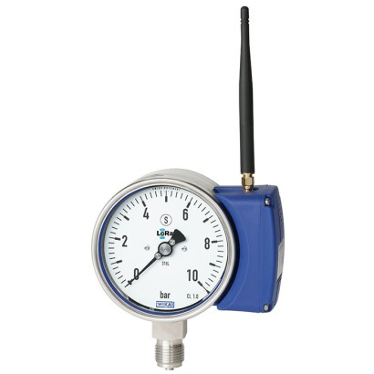

WIKA Model 213.53
Liquid filled gauge
Bourdon tube pressure gauge with wireless transmission. Safety version, NS 100 [4"]

Bourdon tube pressure gauge with wireless transmission. Thiết bị đo WIKA chính hãng, phù hợp cho nhà máy, EPC và dự án công nghiệp tại Việt Nam. Fast Group Engineering hỗ trợ tra cứu cấu hình, đối chiếu mã và cung cấp WIKA Models PGW23.100, PGW26.100 chính hãng kèm chứng từ đầy đủ.
Là nhà cung cấp WIKA chính hãng tại Việt Nam, Fast Group Engineering giúp anh/chị chọn đúng cấu hình WIKA Models PGW23.100, PGW26.100 theo dải đo, kết nối cơ khí và vật liệu tiếp xúc, đồng thời xác nhận mã thay thế khi model đã ngừng sản xuất.
Tài liệu kỹ thuật chính thức từ WIKA. Cần bản tiếng Việt hoặc hồ sơ dự án, vui lòng gửi RFQ.
Fast Group Engineering cung cấp đo áp suất WIKA Models PGW23.100, PGW26.100 nhập khẩu chính hãng từ WIKA (Đức), kèm chứng từ CO/CQ, hóa đơn và hồ sơ kỹ thuật đầy đủ theo yêu cầu dự án.
Anh/chị có thể gửi RFQ trực tiếp cho Fast Group Engineering để nhận báo giá WIKA Models PGW23.100, PGW26.100 chính hãng, kiểm tra cấu hình, nguồn hàng và lead time giao đến nhà máy trên toàn quốc.
Gửi part number hoặc ảnh nameplate, chúng tôi đối chiếu dải đo – kết nối – vật liệu, xác nhận mã thay thế nếu cần và phản hồi giá cùng lead time nhanh theo RFQ.
Liquid filled gauge

Bourdon tube pressure gauge, stainless steel

Pressure sensor A-10

Pressure sensor S-20